Step1. 登录oKit前台，点击进入项目管理模块

Step2. 点击工作任务标签页,进入工作任务模块
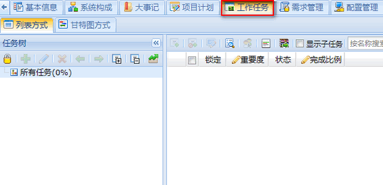
Step3. 打开互斥锁，同一时间只允许一个用户编辑任务
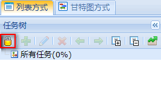
Step4. 添加新任务
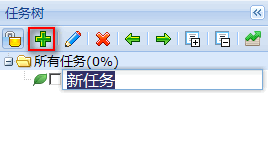
添加按钮，填写任务名称
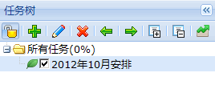
任务添加完成
Step5. 继续细化任务：点击刚创建的任务，重复上一步骤，添加子任务
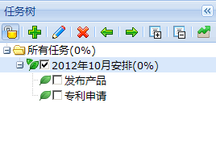
子任务添加完成
Step6. 选中需要分配的任务，点击编辑按钮，添加任务人员
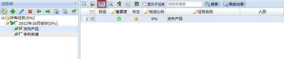
编辑按钮
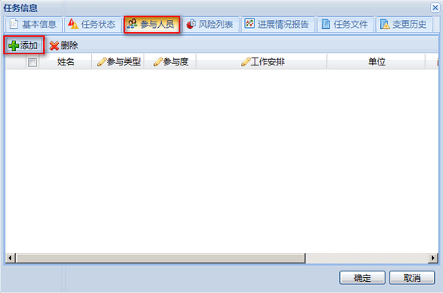
添加人员按钮
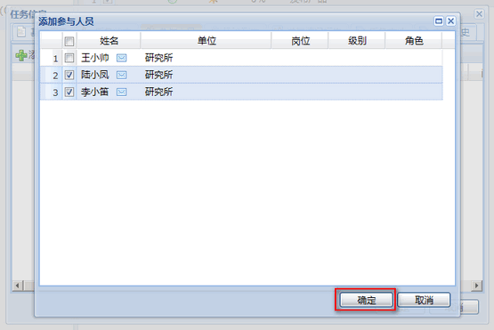
添加任务人员
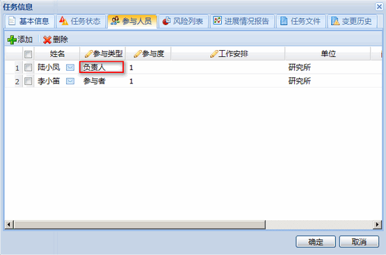
双击修改人员参与类型，完成后点击确定
Step7. 发布任务，发布后参与人员将可以开始执行任务
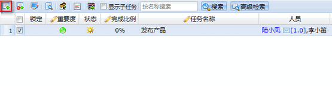
发布按钮
Step8. 当参与人员执行任务，并且确认完成后，可以进行验收
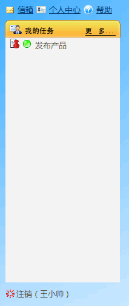
点击任务链接验收
Step9. 点击验收按钮，填写验收结果
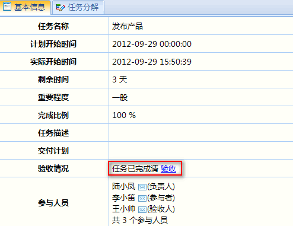
验收按钮
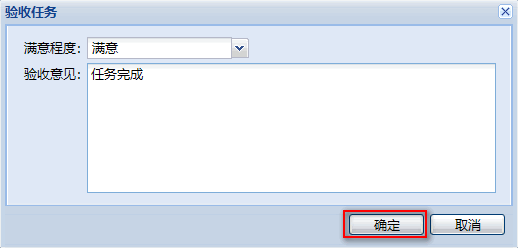
填写验收结果并确认